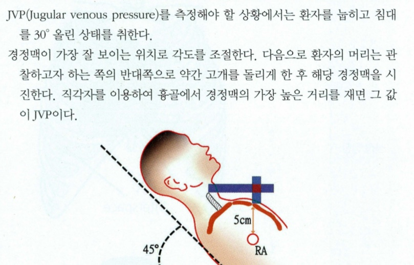

O | 언/갑/서/(상-감기,운동,잠자다) | |
L |
| |
D | 몇번/지속 | |
Co | 점점 | |
Ex | 이전->치료 | |
C | 어떻게 숨참?=> 얼마나 숨참 [MMRC] 가만히 있어도? 일상생활?[PPI] 1.등산/계단오를 떄 숨참 2. 평지 걸으면 동년배보다 느림 3. 100m만/ 몇분만 걸어도 숨참 4. 옷 갈아입을 떄 숨참 | |
A | 전신 | 발열/오한/체감/피로 |
| 호흡(상) | 기침/가래/콧물/목아픔 |
| 호흡(하) | 쌕쌕/객혈 |
| 기흉 | 숨 들이마쉬면 가슴통증 |
| 심부전 | 흉통+전신부종 |
| 갑상샘 | 더위불내성/설사 |
| 알러지 | 두드러기+입술부종 (약,곤충,음식,꽃가루) |
| 정신 | 죽을거 같은 공포+불안+스트레스 |
F | 악화/완화 인자-OPEN ① 감기 : 최근/ 어릴때부터 자주 [기관지확장증] ② 운동 ③ [천식] 밤/날씨 차고 건조해지면 심함 ④ [심부전/폐부종] 자세-누우면악화 | |
E | 건강검진+ 가슴 엑스레이 | |
외 | 외상. 수술-> [PTE] 최근 입원/오래누워있던적 | |
과 | HTN/DM/간질환 + 천식/결핵/폐질환 + 심부전/심장 | |
약 | 경구피임약/여성호르몬제-> [PTE] | |
사 | 술+담+직+스트레스(근무환경) | |
가 | 고혈압/당뇨/고지혈증+ 결핵/폐암/폐질환 | |
여 | 임신가능성/질분비물 | |
16. 호흡곤란
호흡
| 천식 | 쌕쌕거림 봄/야간 악화 + 알레르기력 | 기도 염증과 수축으로 숨길 좁아짐 |
| 만성 폐쇄 폐질환(COPD) | 마른기침+가래+쌕쌕거림 +고령/흡연자 | 오랫동안 손상된 폐가 공기 흐름막음 |
| 기관지확장증 | 가래+[객혈] 피 많음+수포음 잦은 상기도 감염 | 감염이나 염증으로 기관지가 손상비정상적으로 넓어지고 가래가 고여 염증·감염이 반복 |
| 기흉 | 갑자기+찌르는듯한 젊남/숨쉬면 더 힘들다 | 폐 밖에 공기가 새어 나옴 ➔ 폐가 눌려 |
| 폐색전증 | 갑자기+목정맥확장+사지부종 +수포음 (Hx 수술/외상) | 폐혈관이 혈전으로 막혀 피와 산소 공급이 감소 |
| 폐렴 | 발열+기침+가래 흉통+호흡곤란 | 폐에 염증과 분비물이 차서 산소 교환이 잘 안 돼 |
| 사이질폐질환 | 만성 마른기침+객혈 호흡곤란: 청색증+곤봉지 | 염증이나 흉터로 폐 조직이 굳어져 산소가 잘 안 통해 숨이 차요. |
순환기 | 울혈심부전 | 기저 심질환+부종+피로 경정맥확장+하지부종 | 심장이 약해져 폐에 물차서 숨참 |
| 빈혈 | 위수술력+결막+피로/어지럼 | 혈액의 산소 운반이 감소 숨참 |
내분비 | 갑상샘 항진 | 더위불내성+체중감소 | 대사가 빨라져 몸이 더 많은 산소를 필요 |
정신 | 공황장애 | 반복적+예기치못한 공황발작+예기불안+행동변화 | 불안 발작으로 과호흡 |
신체진찰! | |
눈 | 빈혈, 황달 |
입 | 점막-탈수 |
목 | 갑상샘+기관편위 |
전신 | 피부긴장도+오목부종 +) 청색증/곤봉지 |
호흡기신체진찰 | -청진 맨 마지막!! -앉아서 후면만 진행 : 손 앞가슴 엑스자 시켜라 | ||
얼굴 | ① 부비동 압통 확인하기 ② 비경 있으면 비경 콧구멍에 넣고 빛 비춰보기 ③ 맥박잰다고 하고 호흡수 15초 측정(16회라고 뻥쳐) ④ 청색증 곤봉지 확인 | ||
시진 | 옷 올려보기 눈으로 보고 숨깊게 쉬어보셈 + 기침도 해보셈 (앞뒤 다 확인) | ||
촉진 | 등 뒤만 ① 양 손등 대고 아 해보세요 4번 ② 엄지 모아지게 흉곽 감싸 안고 조이기 ➔ 숨 쉬어보세용 : 흉곽 벌어짐/대칭 | ||
타진 | ㄹ자로 8군데+ 아래는 양 옆구리쪽으로 2번 벌어지면서도 하기 | ||
청진 | 청진기 차가워요+데우기 ㄹ자로 듣기(8번+아래옆구리2번 | + 심음청진! 5군데 | |
누워서 특이검사 |  | |
심부전 의심 | 경정맥: 침대 30도 거상
|
|
폐색전 의심 | 호만스사인-종아리압통 (무릎5도구부리고 약간 다리 든다) 발 들고 발등 쪽으로 꺾고 종아리 근육 눌러보면 아프다 |
|

진단 계획 | [기본] ① 흉부 x-ray ② 폐기능검사 ③ 동맥혈 가스분석 : 혈액의 산소와 이산화탄소 수치를 확인 폐가 숨을 잘 쉬고 내쉬는지 평가 ④ 혈액검사 ⑤ +) 심전도 +) 천식유발검사: 약이나 운동으로 숨길을 자극 숨이 좁아지는지 보는 검사 | |
치료 | ① 천식 : 흡입스테로이드-염증 감소-증상악화 예방 ② COPD: 기관지확장제-기도 넓히기/쉬기 편함 ③ 기흉: 흉관삽입/ 산소마스크 ④ 기관지확장증:거담제, 항생제, 배농,기관지동맥색전술 ⑤ 폐색전증: 헤파린(피가 덜 굳게)+ 혈전용해제 | |
| ⑥ 폐렴: 항생제+수액 ⑦ ILD : 스테로이드 ⑧ 심부전 : 혈압/맥박 조절약 | ⑨ 빈혈-철분보충 ⑩ 갑상샘항진-호르몬 ⑪ 공황장애-정신과약물/인지행동치료 |
교육 | [응급] 갑자기 호흡곤란 심함-> 즉시내원 [예방접종] 폐렴+독감 예방접종 주기적 [금연] 유해가스-> 잦은 기침유발+폐암+만성폐쇄폐질환 유발 | |